Базовый опыт за монстров.
Lineage 2 Classic: Saviors / Antharas, protocol 140
Wiki сервера Antharas Classic
Собранная по текущим конфигам справка для игроков: рейты, стартовые условия, подземелья, PvP-активности, сервисы и важные ограничения.
x2
EXP / Adena / Drop
x3
SP
140
Classic Antharas
Базовая экономика
Рейты сервера
Очки умений идут быстрее опыта.
Множитель количества адены.
Количество розыгрышей дропа.
Розыгрыши спойла и шанс спойла x2.
Квестовые предметы падают вдвое чаще.
| Категория | Значение | Комментарий |
|---|---|---|
| Шанс дропа | x2 | Модификатор влияет на шанс, не на количество. |
| Количество дропа | x1 | Количество предметов без дополнительного множителя. |
| Raid EXP | x1.5 | Опыт за убийство Raid Boss. |
| Raid SP | x2 | SP за Raid Boss выше обычного. |
| Raid / Boss drop | x2 | Количество розыгрышей дропа с рейдов и боссов. |
| Siege Guard drop | x3 | Дроп с осадных гвардов усилен отдельно. |
Первые минуты
Старт и прокачка
Starter Pack
Включен стартовый сценарий: персонаж доводится до целевого 4 уровня и после первого визита в город направляется в пригородную фарм-зону до 9 уровня.
Auto Loot
Автоподбор включен для адены. Хербы, рейды и PK-лут остаются без автоподбора.
Droplist
Просмотр дроп-листа включен, поэтому игроку проще планировать фарм и спойл.
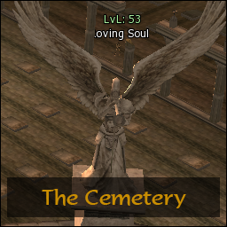
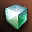
Инстансы и арены
Подземелья
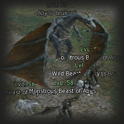
Balthus Knights - Antharas
Уровни 70-84, командный формат 27-300 игроков, лимит 120 минут. Откат по расписанию в среду в 06:30.
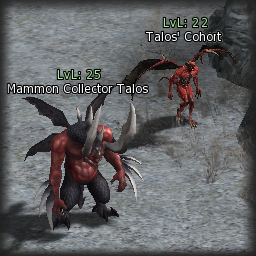
Balthus Knights - Baium
Уровни 70-84, 27-300 игроков, лимит 120 минут. Общий ритм отката совпадает с Balthus-контентом.
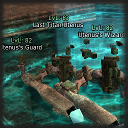
Clan Arena
От 1 игрока, до 40 участников. Внутри 4 стадии, 20 минут базового времени и до 5 продлений за адену.
Grand Olympiad Stadium
Three-branched Road
Stadium of Hero's Vestiges
Orbis Oval Arena
Orchid Hall
Ellia Hall
Laurell Hall
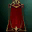
Конфликты и ивенты
PvP-активности
Player vs Player Duel
Базовый PvP-ивент для быстрых боев.
Lair of Antharas / Tower of Insolence
Зоны для массового столкновения и контроля спотов.
TvT Relax / TvT Hard
Две вариации командного события под разные темпы игры.
Hasher Relax / Hasher Hard
Кастомные PvP-сценарии из папки проекта.
Клановые войны
- Минимальный уровень клана
- 3
- Минимум участников
- 15
- Лимит объявленных войн
- 30
- Убийств до взаимной войны
- 5
- Репутация за kill
- 1
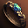
Удобство
Фишки сервера
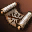
NPC Buffer
Бесплатные баффы, резисты, песни, танцы, чанты, special-раздел, лечение и схемы. Минимальный уровень - 1, до 4 схем.
Offline Trade
Команда `.offline` включена, вход бесплатный, минимальный уровень 40, восстановление после рестарта включено.
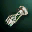
Warehouse и Mail
Склад, почта и возврат предметов разрешены. Персонажу доступно до 7 слотов на аккаунте.
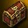
Аккаунт-защита
Доступны ручные привязки аккаунта к IP и HWID через `.lock`; автоматическая привязка отключена.
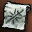
BBS и услуги
Сервисы
Доступны
- Смена ника, пола, базового класса и имени питомца.
- Отделение саб-класса.
- Расширение инвентаря до 250 ячеек.
- Расширение личного и кланового склада.
- Смена имени клана.
- Vitamin Manager включен.
Энчант-сервис
- Оружие D-A: максимум +16.
- Броня D-A: максимум +16.
- Бижутерия D-A: максимум +16.
- Цена +1: 200 000 адены.
- Цена +10: 2 предмета ID 4037.
Прогрессия
Стадии сервера
Система стадий есть в конфиге, но сейчас выключена. Ниже показаны подготовленные значения, чтобы игроки понимали возможную структуру прогрессии.
Лимит уровня, цели по PK/PvP/RB: 11, средний уровень 15.
Лимит уровня, высокие цели по PK/PvP/RB и среднему уровню.
Лимит уровня без обязательных числовых целей.
Финальная подготовленная стадия.
Ничего не найдено. Попробуй другой запрос.